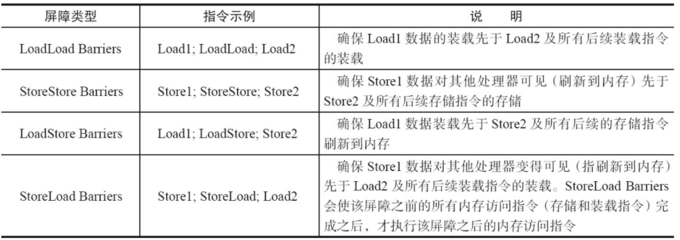
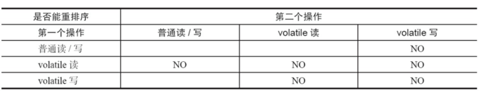
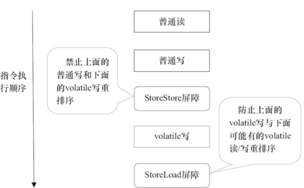
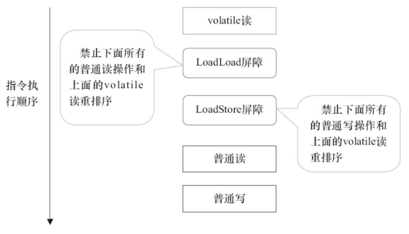

1. Synchronized vs volatile
synchronized是阻塞式同步，在线程竞争激烈的情况下会升级为重量级锁。而volatile是java虚拟机提供的最轻量级的同步机制。而针对volatile修饰的变量给java虚拟机特殊的约定，线程对volatile变量的修改会立刻被其他线程所感知，即不会出现数据脏读的现象，从而保证数据的“可见性”。
被volatile修饰的变量能够保证每个线程能够获取该变量的最新值，从而避免出现数据脏读的现象。
2. 实现原理
生成汇编代码时会在Volatile修饰的共享变量进行写操作的时候多出lock前缀的指令：该指令会将当前处理器缓存行的数据写会系统内存；这个写回内存的操作会使得其他CPU里缓存了该内存地址的数据无效
为了提高处理速度，处理器不直接和内存进行通信，而是先将系统内存的数据读到内部缓存（L1，L2或其他）后再进行操作，但操作完不知道何时会写到内存。如果对声明了volatile的变量进行写操作，JVM就会向处理器发送一条Lock前缀的指令，将这个变量所在缓存行的数据写回到系统内存。但是，就算写回到内存，如果其他处理器缓存的值还是旧的，再执行计算操作就会有问题。所以，在多处理器下，为了保证各个处理器的缓存是一致的，就会实现缓存一致性协议，每个处理器通过嗅探在总线上传播的数据来检查自己缓存的值是不是过期了，当处理器发现自己缓存行对应的内存地址被修改，就会将当前处理器的缓存行设置成无效状态，当处理器对这个数据进行修改操作的时候，会重新从系统内存中把数据读到处理器缓存里。因此，经过分析我们可以得出如下结论：
- lock前缀的指令会引起处理器缓存写回内存
- 一个处理器的缓存回写到内存会导致其他处理器的缓存失效
- 当处理器发现本地缓存失效后，就会从内存中重读该变量数据，即可以获得当前最新值
3. volatile的happen before关系
写后读，线程A改本地内存的变量，同步到主内存，线程B的本地内存废弃，到主内存中拿到更新的数据。
4. volatile的内存语义实现
为了性能优化，JMM在不改变正确语义的前提下，会允许编译器和处理器对指令序列进行重排序，那如果想阻止重排序要怎么办了？答案是可以添加内存屏障。
内存屏障类型：


“NO”表示禁止重排序。为了实现volatile内存语义时，编译器在生成字节码时，会在指令序列中插入内存屏障来禁止特定类型的处理器重排序。对于编译器来说，发现一个最优布置来最小化插入屏障的总数几乎是不可能的，为此，JMM采取了保守策略：
- 在每个volatile写操作的前面插入一个StoreStore屏障；
- 在每个volatile写操作的后面插入一个StoreLoad屏障；
- 在每个volatile读操作的后面插入一个LoadLoad屏障；
- 在每个volatile读操作的后面插入一个LoadStore屏障。

